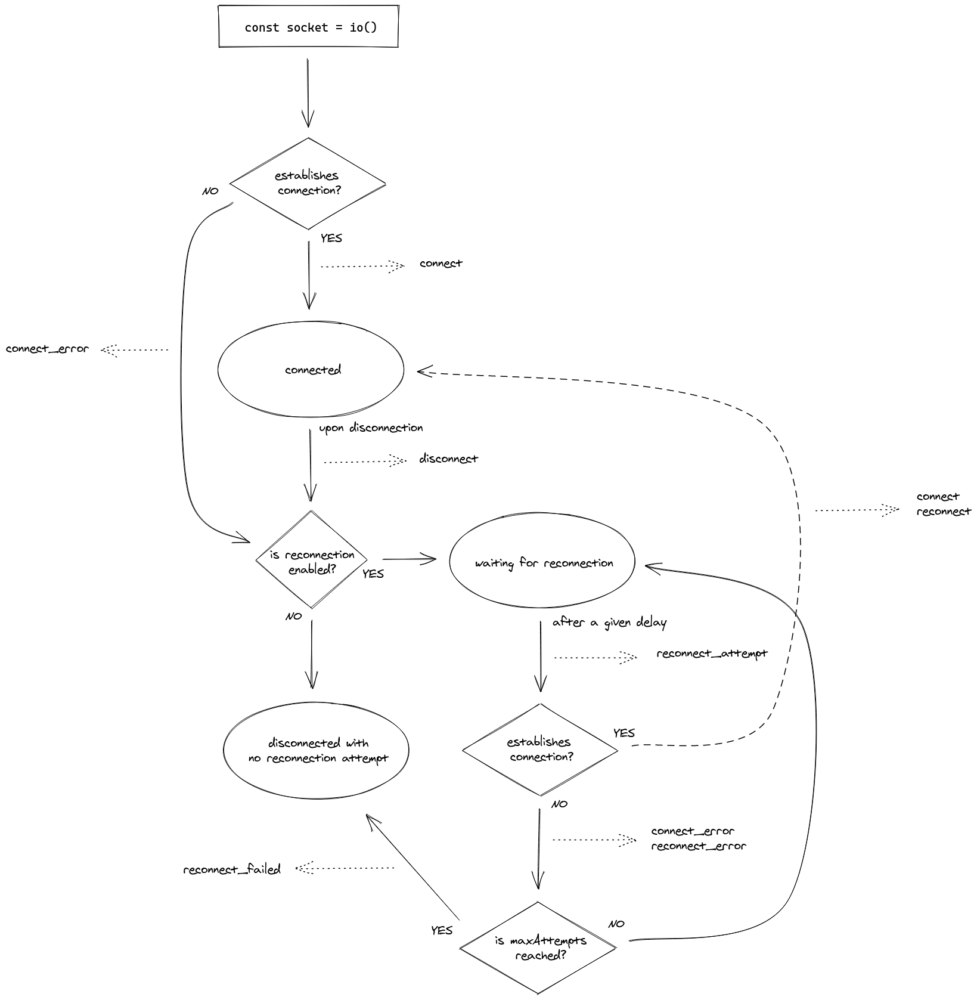

Socket.io 技术及其微服务实现框架

目录
介绍Socket.io使用方法，高可用性解决思路，以及基于socket.io构建微服务的基本方法。
概述
Socket.IO is a powerful tool for creating real-time applications with bidirectional communication between the server side and the client side. It leverages the power of WebSockets along with several fallbacks, including JSON long polling and JSONP long polling through a single unified API. It can be used to create bidirectional interactions, such as real-time dashboards, chat applications, and multiplayer games.
Socket.IO is an open source library created by Guillermo Rauch. It is built with Engine.IO, which is a lower-level abstraction on top of the WebSocket technology. Socket.IO is used to communicate bidirectionally between the server side and the client side in a syntax that looks as if you are just triggering and listening to events. The WebSocket API protocol was standardized in 2011. It is a Transmission Control Protocol (TCP) that only relies on HTTP for its initial handshake. After the handshake is complete, the connection is left open so that the server and the client can pass messages back and forth as needed.
重连机制
服务器端故障检测
Socket.IO has some really great built-in functionalities to re-establish the connection once it has been dropped. This is accomplished by creating recurring polling requests to the server until a new connection is found or until the number of reconnection attempts we allow are exceeded.
Most of the magic in this recipe will take place on the client side, so the server is really not as important as long as it is a functional server that hosts Socket.IO.
All the connection timeout handling will happen on the client side. Socket.IO gives us several socket life cycle events that we can tap into. We can use these events to know when we lose a connection, when we successfully reconnect, and so on.
<script src="/socket.io/socket.io.js"></script>
<script>
var socket = io('http://localhost:5000', {
'reconnection': true,
'reconnectionDelay': 500,
'reconnectionAttempts': 5
});
socket.on('reconnect', function (number) {
console.info('After attempting ' + number + ' times, we finally reconnected!');
});
socket.on('reconnect_attempt', function (number) {
console.info('Reconnect attempt number ' + number);
});
socket.on('connect_error', function () {
console.warn('Error connecting to Socket.IO');
});
socket.on('reconnect_failed', function () {
console.error('We failed to reconnect to Socket.IO. We give up.');
});
</script>
By default, the reconnection option is set to true. If we set reconnection to false, Socket.IO will not attempt to reconnect when a connection is dropped. The reconnectionDelay option specifies how many milliseconds are allowed to pass before we ping the server for a reconnection. The pinging will continue to take place until the number of reconnectionAttempts we specified is satisfied or until the connection is re-established. By default, the reconnection attempts are set to Infinity.
客户端断开情况
A socket can disconnect for any number of reasons:
- The user may navigate away from the web page that the WebSocket connection is on
- The user’s Internet may go down
When these things happen, we can tap into the disconnect event to notify the client side that the socket is no longer available.
On the client-side, the connected attribute of the Socket object returns the current state of the connection:
客户端socket连接状态生命周期图如下：

双向通信
The server-side code will act as a hub for incoming messages.
Sending messages to all the sockets, except for the sender. This can be accomplished using the socket.broadcast.emit() syntax. The socket.broadcast.emit() method sends the message to every socket, except for the socket that the method is called from.
Namespaces are a great way to make sure that our Socket.IO events are not emitted globally to all the sockets that are connected to the server. We can send messages to a namespace. Only the sockets listening to this namespace will receive the event.
On the server side of our application, the io.of() method was used to create a namespace. It took a string with the name of the namespace as the first argument. The namespace name was important because we also used it on the client side.
On the client side, we just needed to add the namespace to the end of our first argument in the io() method. In our example, we instantiated the namespace with the port number as io.of(‘http://localhost:5000/my-namespace’). However, if we were listening on port 80 instead of port 5000, we could actually just pass the namespace name and not worry about providing the port: io.of('/my-namespace').
Although each socket can only have a single namespace, these sockets can belong to multiple rooms. You can think of rooms as channels that a socket subscribes to in order to receive specific types of messages.
Socket.IO can emit messages to any arbitrary room name with the io.to(:room_name).emit() method. It should be noted that you can emit to a room name whether or not the room already exists beforehand, so there is no need to perform any checking to make sure that the room is available.
Each socket has its own room when it is connected. In Socket.IO, every socket that makes a connection is assigned a default room to emit messages. This default room could be used for a wide variety of purposes.
Golang Socket.io-based Miscroservice
Microservice architecture is important in environments where smaller packagable features are a concern. Generally, microservices are called using RPC, but GOSF connects to microservices using Socket.IO.
When creating a Socket.IO microservice in another framework or language, remember that GOSF generates standard messages using the GOSF Message Protocol.
Because microservices are expected to communicate with the same GOSF Message Protocol, there’s no need to worry about any of the traditional microservice protocol buffers. If you prefer strict typing, you can convert Body and Meta maps in the incoming Message using MapToStruct and in the outgoing message using StructToMap.